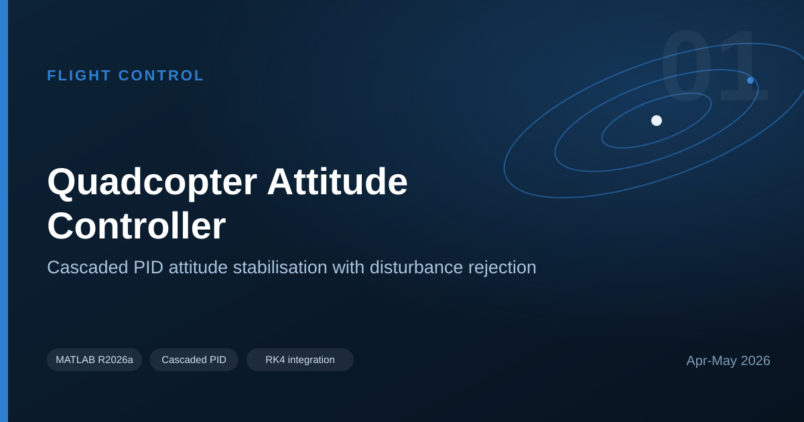
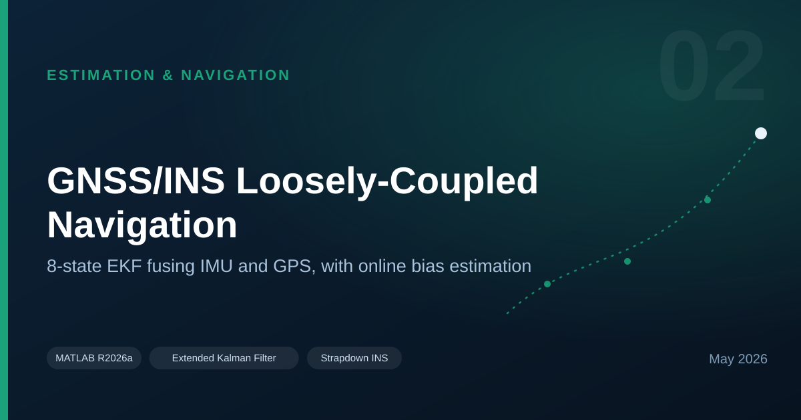
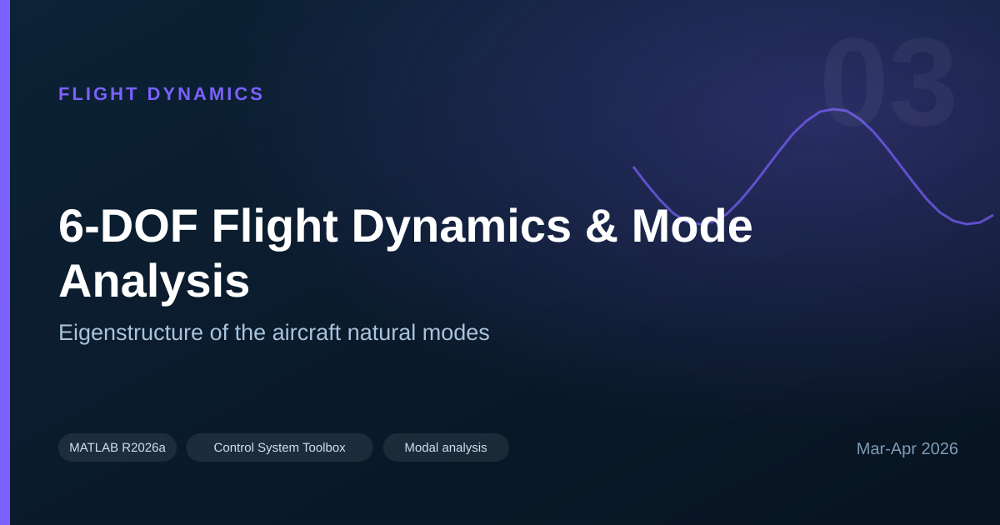
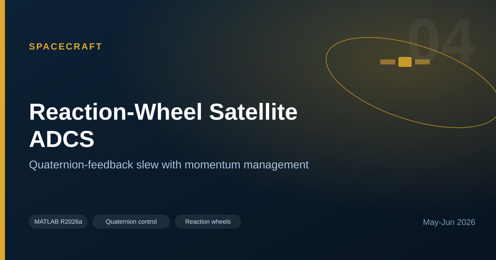
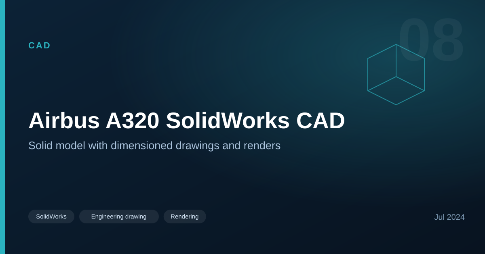
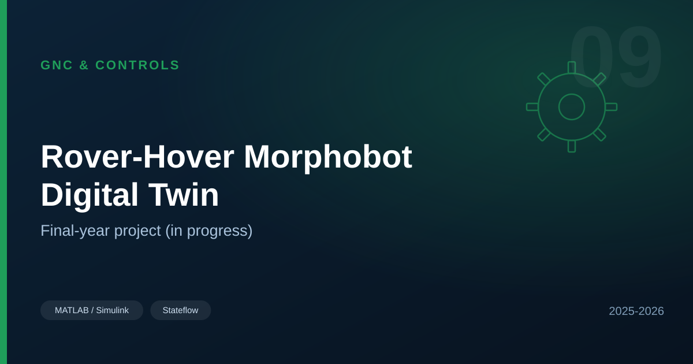

Aerospace Engineering (Guidance, Navigation & Control)
Ali Murtaza
Final-year BS Aerospace Engineering student building flight-control, state-estimation and simulation projects in MATLAB/Simulink and C++.
Projects
Flight control, state estimation, navigation, flight dynamics, spacecraft attitude control, software and CAD. Each card opens a full write-up with the approach, results and figures.

Quadcopter Attitude Controller
Cascaded PID attitude stabilisation with disturbance rejection
View project →
GNSS/INS Loosely-Coupled Navigation
8-state EKF fusing IMU and GPS, with online bias estimation
View project →
6-DOF Flight Dynamics & Mode Analysis
Eigenstructure of the aircraft natural modes
View project →
Reaction-Wheel Satellite ADCS
Quaternion-feedback slew with momentum management
View project →
GPS Single-Point Positioning + EKF
A from-scratch GNSS pipeline in C++17
View project →
Ultrasonic Pan-Tilt Object Tracker
Scan-and-track on Arduino Mega 2560
View project →
C++ Banking System (OOP)
Encapsulated accounts with MPIN authentication
View project →
Airbus A320 SolidWorks CAD
Solid model with dimensioned drawings and renders
View project →
Rover-Hover Morphobot Digital Twin
Final-year project (in progress)
View project →Skills
Controls & GNC
- Control Systems
- Guidance, Navigation & Control (GNC)
- PID & Cascaded Control
- State-Space Modelling
- Stability Analysis
- Root Locus, Bode/Nyquist
Estimation & Simulation
- State Estimation & Filtering (EKF/ESKF)
- Sensor-model & noise simulation
- Dynamic-system modelling
- Modelling & Simulation
- Digital-twin concepts
- Validation-oriented modelling
Aerospace
- Flight Dynamics & Stability
- Aero Vehicle Performance
- Spacecraft Dynamics & Control
- UAV Systems
- Propulsion fundamentals
Programming
- C++ (OOP)
- C
- Python (basics)
- Numerical Methods
- Technical Documentation
Embedded & CAD
- Digital Systems Design
- Microcontrollers (Arduino)
- Circuits & Electronics
- SolidWorks
- Engineering Drawing / CAD
Tools
- MATLAB
- Simulink
- C++ / CMake
- Python
- SolidWorks
- Git / GitHub
About
I am a final-year BS Aerospace Engineering student at the Institute of Space Technology, Islamabad, focused on guidance, navigation and control. I build flight-control, estimation and simulation systems in MATLAB/Simulink and C++, and I care about getting the engineering right: honest models, verified results, and clear documentation.
Recent work spans cascaded flight control, a GNSS/INS navigation filter built around an Extended Kalman Filter, aircraft mode analysis, spacecraft attitude control, and a from-scratch GNSS positioning engine in C++. My final-year project is a hardware-paired digital twin of a transforming rover-hover quadcopter.